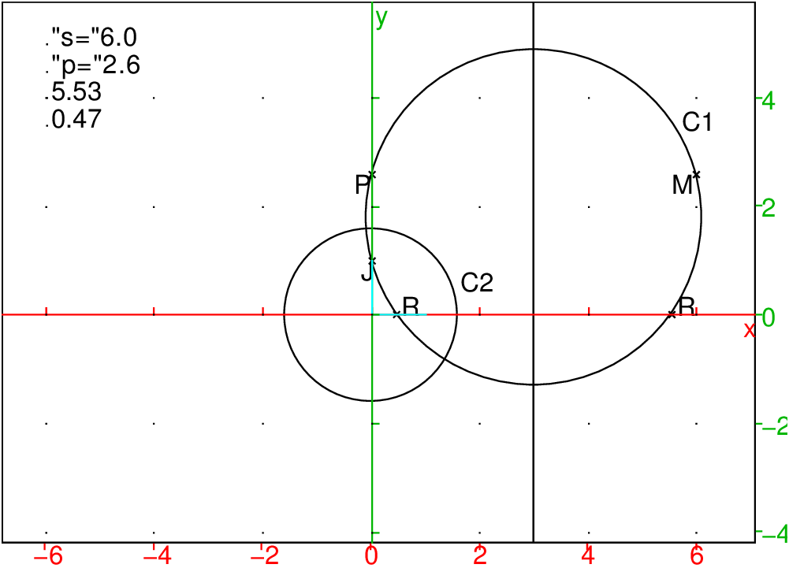
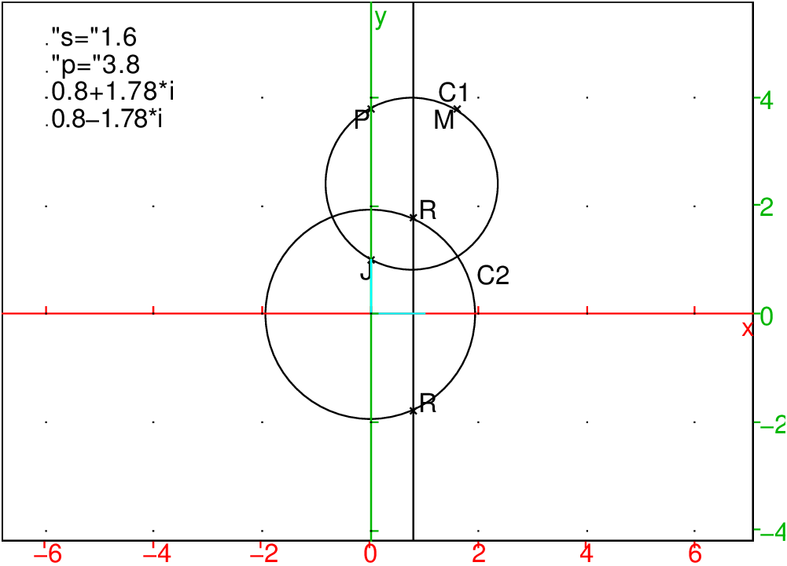

Objectifs
S’entrainer à lire, écrire, interprêter et simplifier des
expressions.
Faire la distinction entre expression et fonction.
Une expression est une suite de termes séparés par un signe
d’opération.
Un terme est un nombre ou un nom de variable ou un
produit ou une parenthése contenant une expression.
Convention
La multiplication et la division sont prioritaires sur l’addition et la
soustraction.
Le signe * est quelqufois omis dans l’écriture, par exemple on
écrit :
2x au lieu de 2*x.
Voici 6 expressions formées à partir de T=1−x*2+x en rajoutant des
parenthèses:
| A=(1−x)*2+x |
| B=1−(x*2)+x |
| C=1−x*(2+x) |
| D=(1−x*2)+x |
| F=1−(x*2+x) |
| G=(1−x)*(2+x) |
1/ Y-a-t-il une (ou des) expression(s) égale à T ?
Si oui, pourquoi ?
2/ Calculer les valeurs de ces expressions pour x=1 et pour x=−1.
3/ Parmi les expressions A,B,C,D,F,G :
- Lesquelles sont une somme de 2 termes ?
- Lesquelles sont une différence de 2 termes ?
- Lesquelles sont une somme algébrique de 3 termes ?
- Lesquelles sont un produit de 2 termes ?
- Lesquelles sont égales ?
4/ Simplifier les expressions A,B,C,D,F,G.
5/ Écrire toutes les expressions formées à partir de S=1+x/2*x en
rajoutant des parenthèses.
On tape :
T:=1-x*2+x
A:=(1-x)*2+x
B:=1-(x*2)+x
C:=1-x*(2+x)
D:=(1-x*2)+x
F:=1-(x*2+x)
G:=(1-x)*(2+x)
Puis on tape pour connaitre les expressions égales à T :
A==T, B==T, etc...
On trouve que la réponse de A==T est 0 ce qui veut dire que
l’expression A est différente de T.
On trouve que la réponse de B==T est 1 ce qui veut dire que
l’expression B est identique à T etc...
Une fonction rèelle f définie sur I partie de ℝ
est une application qui à tout
nombre de x de I fait correspondre une expression f(x).
La valeur de la fonction en un point x est donc donnée par une
expression.
Exemple avec Xcas
Je tape :
xpr:=3*x+2
je définis ainsi l’expression xpr
Je tape :
f(x):=3*x+2
je définis ainsi la fonction f
Je tape :
subst(xpr,x=1) et j’obtiens 5
Je tape :
f(1) et j’obtiens 5
Je tape :
plotfunc(3*x+2) ou,
plotfunc(xpr) ou,
plotfunc(f(x))
j’obtiens un seul graphe qui est le graphe de la fonction f
1/ Définir 6 fonctions ayant pour valeurs respectives les expressions
A,B,C,D,F,G.
2/ Tracer le graphe de ces fonctions et observer sur un même graphique.
3/ Parmi ces graphes il y a des droites et des paraboles. Retrouver le graphe
de chaque fonction.
On tape pour définir les 6 fonctions :
a(x):=(1-x)*2+x
b(x):=1-(x*2)+x
c(x):=1-x*(2+x)
d(x):=(1-x*2)+x
f(x):=1-(x*2+x)
g(x):=(1-x)*(2+x)
Puis on tape pour visualiser les graphes :
plotfunc([a(x),b(x),c(x),d(x),f(x),g(x)])
On obtient que 5 courbes de couleurs différentes.
On peut taper progressivement :
plotfunc([a(x)]), plotfunc([a(x),b(x)]) etc...
On voit ainsi que :
Pour résoudre les équations de la forme :
ax2+bx+c=0 on écrit :
ax2+bx+c=a((x+b/(2a))2−(b2/(4a2)−c/a))
Donc ax2+bx+c=0 est équivalent à (x+b/(2a))2−(b2−4ac)/(4a2))=0
Les solutions dépendent donc du signe de b2−4ac.
On tape :
solve(a*x^2+b*x+c)
On obtient :
[1/(2*a)*(-b+sqrt(-4*a*c+b^2)),1/(2*a)*(-b-sqrt(-4*a*c+b^2))]
On tape :
solve(x^2+2x-5)
On obtient :
[-sqrt(6)-1,sqrt(6)-1]
On tape :
solve(x^2+2x+5)
On obtient :
[-1+2*i,-1-2*i]
Soient 2 réels s et p.
On veut visualiser les racines de x2−sx+p.
Dans le plan muni d’un repère orthonormé d’origine O, on considère les
points J=(0,1), P=(0,p), M=(s,p ), le cercle C1 circonscrit au triangle
JPM et le cercle C2 de centre O et de rayon √|p|.


Avec Xcas, on tape dans un niveau de géométrie :
assume(s=3);
assume(p=2);
J:=point(i);
P:=point(p*i);
M:=point(s+i*p);
C1:=circonscrit(J,P,M);
C2:=cercle(0,sqrt(abs(p)));
d:=droite(x=s/2):;d;
si s^2-4p>=0 alors R:=inter(C1,droite(y=0)):;
sinon R:=inter(C2,d):; fsi;
a:=evalf(affixe(R[0]));
b:=evalf(affixe(R[1]));
legende(-6+4*i,a);
legende(-6+3.5*i,b);
legende(-6+5*i,string("s=")+evalf(s));
legende(-6+4.5*i,string("p=")+evalf(p));
Montrer que :
| √ |
|
|
| = |
|
| + |
|
|
On tape :
normal(expand((sqrt(A+c)+ sqrt(A-c))^2))
On obtient :
sqrt(-4*c^2+4*A^2)+2*A
On tape :
c:=sqrt(A^2-B)
normal(sqrt(-4*c^2+4*A^2)+2*A)
2*A+sqrt(4*B)
Donc :
√A+√A2−B+√A−√A2−B=√2√A+√B
On tape :
sqrt(5+sqrt(21))
On a 52−21=4=22, 5+2=7 et 5−2=3
On obtient donc :
sqrt(7/2)+sqrt(3/2)
On tape :
sqrt(11+6*sqrt(2))
On a 112−72=49=72, 11+7=18 et 11−7=4
On obtient donc :
3+sqrt(2)
On tape :
sqrt(11+2*sqrt(30))
On a 112−120=1=12, 11+1=12 et 11−1=10
On obtient donc :
sqrt(6)+sqrt(5)
On peut écrire un petit programme qui prend en entrée (a,b,s) pour
simplifier sqrt(a+s*sqrt(b)).
On tape :
reduire2(a,b,s):={
local c;
si s==0 alors return sqrt(a);fsi;
c:=round(sqrt(a^2-b*s^2));
si c^2==a^2-b*s^2 alors
si s>0 alors return sqrt((a+c)/2)+sqrt((a-c)/2);
sinon
return sqrt((a+c)/2)-sqrt((a-c)/2);
fsi;
fsi;
return sqrt(a+s*sqrt(b));
}:;
On tape :
reduire2(18,2,-8)
On obtient :
4-sqrt(2)
On tape :
reduire2(194320499737857776523212040,
97160249868928888261606031,19713979797994)
On obtient :
sqrt(97160249868928888261606031)+9856989898997
ou bien, on tape la fonction simply qui doit avoir
r=sqrt(a+sqrt(b)) comme paramètre où b est sans facteur carré:
simply(r):={
local f,a,b,c,d;
si sommet(r)=='^' alors
f:=feuille(r);
a,d:=feuille(f[0]);
si type(a)==integer alors
b:=feuille(d)[0];
c:=sqrt(a^2-b);
si (round(c))^2==a^2-b alors
retourne sqrt((a+c)/2)+sqrt((a-c)/2)
fsi;
sinon
d,a:=feuille(f[0]);
b:=feuille(d)[0];
c:=sqrt(a^2-b);
si (round(c))^2==a^2-b alors
retourne sqrt((a+c)/2)+sqrt((a-c)/2)
fsi;
fsi;
fsi;
retourne r;
}:;
On tape :
simply(sqrt(9+sqrt(17)))
ou
simply(sqrt(sqrt(17)+9))
On obtient :
(sqrt(34))/2+(sqrt(2))/2
ou bien, on tape la fonction simplyf qui doit avoir comme paramètre
r de la forme rsqrt(a+s*sqrt(b)) ou sqrt(a+sqrt(b)) :
simplyf(r):={
local f,a,b,c,d,s,sb;
si sommet(r)=='^' alors
f:=feuille(r);
a,d:=feuille(f[0]);
si type(a)==integer alors
f:=feuille(d);
si f[1]==1/2 alors
s:=1;
b:=f[0];
sinon
s,sb:=f;
si type(s)==integer alors
b:=feuille(sb)[0];
sinon
sb,s:=f;
b:=feuille(sb)[0];
fsi;
fsi;
c:=sqrt(a^2-s^2*b);
si (round(c))^2==a^2-s^2*b alors
retourne sqrt((a+c)/2)+sqrt((a-c)/2);
fsi;
sinon
d,a:=feuille(f[0]);
f:=feuille(d);
si f[1]==1/2 alors
b:=f[0];
s:=1;
sinon
s,sb:=f;
si type(s)==integer alors
b:=feuille(sb)[0];
sinon
sb,s:=f;
b:=feuille(sb)[0];
fsi;
fsi;
c:=sqrt(a^2-s^2*b);
si (round(c))^2==a^2-s^2*b alors
retourne sqrt((a+c)/2)+sqrt((a-c)/2)
fsi;
fsi;
fsi;
retourne r;
}:;
On tape (car Xcas remplace sqrt(128) par 8*sqrt(2):
simplyf(sqrt(18+sqrt(128)))
ou
simplyf(sqrt(sqrt(128)+18))
ou
simplyf(sqrt(8*sqrt(2)+18))
ou
simplyf(sqrt(18+8*sqrt(2)))
ou
simplyf(sqrt(sqrt(2)*8+18))
ou
simplyf(sqrt(18+sqrt(2)*8))
On obtient :
4+sqrt(2)
On tape :
simplyf(sqrt(194320499737857776523212040+19713979797994*sqrt(97160249868928888261606031)))
On obtient :
sqrt(97160249868928888261606031)+9856989898997
Les formules de Cardan permettent de résoudre les équations de la forme :
x3+px+q=0.
Pour cela, on pose x=u+v avec uv=−p/3 on a donc à résoudre :
x3+px+q=u3+v3+3uv(u+v)+p(u+v)+q=u3+v3+q=0.
et on doit résoudre :
u3+v3+q=0 et u3v3=−p3/27
On a donc U=u3 et V=v3 qui sont les solutions de l’équation du 2-ième
degré :
X2+qX−p3/27=0 donc
^3-6*x-9)
Soient :
u=(A+√B)1/3 et v=(A−√B)1/3
On cherche à savoir si u+v est un entier.
On pose :
u*v=p
U=u3=A+√B et V=v3=A−√B
On a U*V=A2−B=(u*v)3=p3 et
U+V=u3+v3=(u+v)(u2+v2−uv)=(u+v)((u+v)2−3uv)=2A donc
(u+v)3−3p(u+v)−2A=0 donc
u+v est racine de :
S3−3pS−2A=0
Pour que ce trinôme ait une racine entière k il faut que A2−B soit le
cube d’un entier p et que k divise 2*A i.e. k*(k2−3p)=2*A.
On cherche à simplifier :
u=(20+14√2)1/3 et v=(20−14√2)1/3
On a : A=20, B=142*2=392 2A=40 A2−B=8=23 donc p=2
L’équation à résoudre est : S3−6S=S(S2−6)=40
Les diviseurs de 40 sont :
idivis(40)
On obtient :
[1,2,4,8,5,10,20,40]
On tape :
L:=NULL;for k in idivis(40) do L:=L,k^2-6; end_for
On obtient :
-5,-2,10,58,19,94,394,1594
On tape :
[1,2,4,8,5,10,20,40].*[-5,-2,10,58,19,94,394,1594]
On obtient :
[-5,-4,40,464,95,940,7880,63760]
donc k=4 est solution et donc :
u=(20+14√2)1/3 et v=(20−14√2)1/3 sont les racines de
X2−4X+2=0
On tape :
solve(x^2-4x+2)
On obtient :
[-sqrt(2)+2,sqrt(2)+2]
Donc (20+14√2)1/3=2+√2 et (20−14√2)1/3=2−√2.
On vérifie :
On tape :
normal(expand((-sqrt(2)+2)^3)),normal(expand((sqrt(2)+2)^3))
On obtient :
-14*sqrt(2)+20,14*sqrt(2)+20
On cherche à simplifier :
u=(9+4√5)1/3 et v=(9−4√5)1/3
On a : A=9, B=42*5=80 2A=18 A2−B=1=13 donc p=1
L’équation à résoudre est : S3−3S=S(S2−3)=18
Les diviseurs de 8 sont :
idivis(18)
On obtient :
[1,2,3,6,9,18]
On tape :
L:=NULL;for k in idivis(18) do L:=L,k^2-3; end_for
On obtient :
-2,1,6,33,78,321
On tape en utilisant .* :
[1,2,3,6,9,18].*[L]
On obtient :
[-2,2,18,198,702,5778]
alors que [1,2,3,6,9,18]*[L] renvoie 6696
donc k=3 est solution et donc :
u=(9+4√5)1/3 et v=(9−4√5)1/3 sont les racines de
X2−3X+1=0
On tape :
solve(x^2-3x+1)
On obtient :
[1/2*(3-sqrt(5)),1/2*(3+sqrt(5))]
Donc (9+4√5)1/3=(3+√5)/2 et (20−14√2)1/3=(3−√5)/2.
On vérifie :
On tape :
normal(expand((-sqrt(5)/2+3/2)^3)),normal(expand((+sqrt(5)/2+3/2)^3))
On obtient :
-4*sqrt(5)+9,4*sqrt(5)+9
Remarque La méthode utilisée ci-dessus n’est valable que lorsque le
nombre pour lequel on cherche les diviseurs est petit ! Il est donc
préférable de faire évaluer par Xcas u+v puis de vérifier
si u+v est entier.
On peut écrire un petit programme qui prend en entrée (a,b,s) pour
simplifier (a+s*sqrt(b))^(1/3).
On évite la décomposition en facteurs premiers trop longue en utilisant
des round.
On utilise la fonction surd qui est la puisance 1/n par exemple :
si a>0, surd(a,3) renvoie a^(1/3) et
si a<0, surd(a,3)renvoie -(-a)^(1/3)
On tape :
reduire3(a,b,s):={
local c,d,r;
si s==0 alors return a^(1/3);fsi;
c:=round(surd(a^2-b*s^2,3));
d:=round(surd(a+sqrt(b*s^2),3)+surd(a-sqrt(b*s^2),3));
si (c^3==a^2-b*s^2) alors
si (d*(d^2-3*c)==2*a) alors
r:=solve(x^2-d*x+c);
si s>0 alors return r[1]; else return r[0]; fsi;;
fsi;
fsi;
return (a+s*sqrt(b))^(1/3);
}:;
On tape :
reduire3(9,5,-4)
On obtient :
1/2*(3-sqrt(5))
On tape :
reduire3(747,5,428)
On obtient :
4*sqrt(5)+3
On tape (avec Digits:=30) :
reduire3(957707601542343957074807589821177843432,
9716024986949,291480749606796380809804976)
On obtient :
sqrt(9716024986949)+9856989898997
Résoudre :
^2+2x+2=0)^2+2x+2=0)^4-6x^2+6=0)^6-26x^5+250x^4-1160x^3+2749x^2-3134x+1320=0)^4-a*x^3-6*x^3+6a*x^2+11x^2-11a*x-6x+6a=0)^4-pi*x^3-6*x^3+6*pi*x^2+11x^2-11*pi*x-6x+6*pi=0)^5-3x-1=0)^2*cos(x)^2+cos(2x)^2-1)^2*cos(x)^2+cos(2x)^2=1)^3-3*cos(x)-sin(2x)-cos(3x))^3-3*cos(x)-sin(2x)-cos(3x)=0)